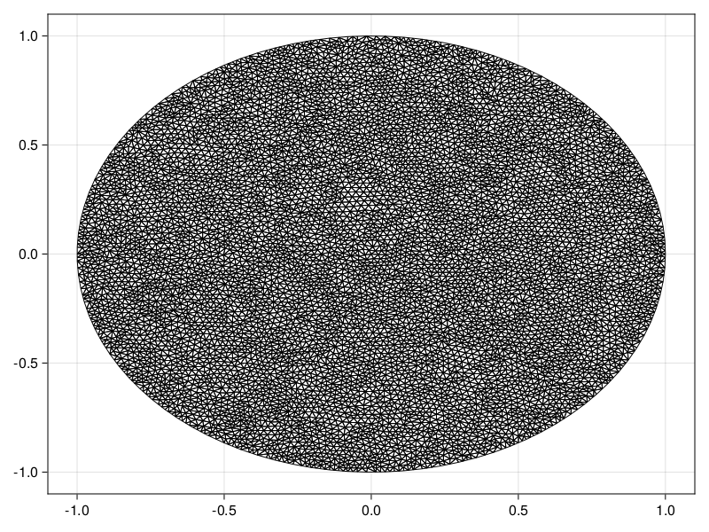
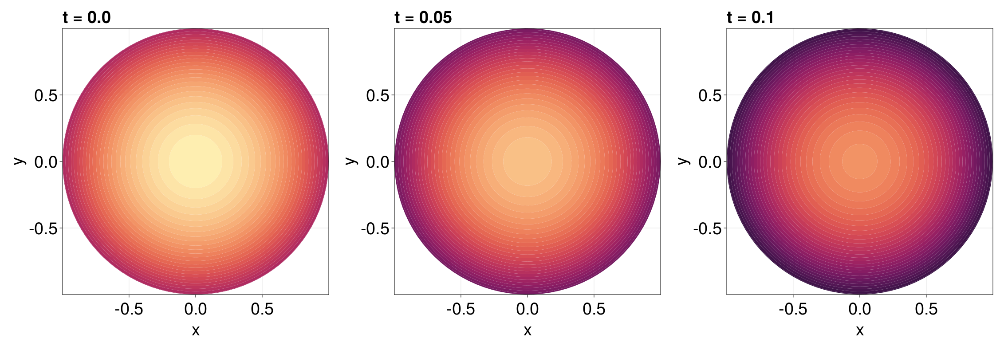

Reaction-Diffusion Equation with a Time-dependent Dirichlet Boundary Condition on a Disk
In this tutorial, we consider a reaction-diffusion equation on a disk with a boundary condition of the form $\mathrm du/\mathrm dt = u$:
\[\begin{equation*} \begin{aligned} \pdv{u(r, \theta, t)}{t} &= \div[u\grad u] + u(1-u) & 0<r<1,\,0<\theta<2\pi,\\[6pt] \dv{u(1, \theta, t)}{t} &= u(1,\theta,t) & 0<\theta<2\pi,\,t>0,\\[6pt] u(r,\theta,0) &= \sqrt{I_0(\sqrt{2}r)} & 0<r<1,\,0<\theta<2\pi, \end{aligned} \end{equation*}\]
where $I_0$ is the modified Bessel function of the first kind of order zero. For this problem the diffusion function is $D(\vb x, t, u) = u$ and the source function is $R(\vb x, t, u) = u(1-u)$, or equivalently the force function is
\[\vb q(\vb x, t, \alpha,\beta,\gamma) = \left(-\alpha(\alpha x + \beta y + \gamma), -\beta(\alpha x + \beta y + \gamma)\right)^{\mkern-1.5mu\mathsf{T}}.\]
As usual, we start by generating the mesh.
using FiniteVolumeMethod, DelaunayTriangulation, ElasticArrays
r = fill(1, 100)
θ = LinRange(0, 2π, 100)
x = @. r * cos(θ)
y = @. r * sin(θ)
x[end] = x[begin]
y[end] = y[begin] # make sure the curve connects at the endpoints
boundary_nodes, points = convert_boundary_points_to_indices(x, y; existing_points=ElasticMatrix{Float64}(undef, 2, 0))
tri = triangulate(points; boundary_nodes)
A = get_total_area(tri)
refine!(tri; max_area=1e-4A)
mesh = FVMGeometry(tri)FVMGeometry with 8137 control volumes, 15948 triangles, and 24084 edgesusing CairoMakie
triplot(tri)
Now we define the boundary conditions and the PDE.
using Bessels
BCs = BoundaryConditions(mesh, (x, y, t, u, p) -> u, Dudt)BoundaryConditions with 1 boundary condition with type Dudtf = (x, y) -> sqrt(besseli(0.0, sqrt(2) * sqrt(x^2 + y^2)))
D = (x, y, t, u, p) -> u
R = (x, y, t, u, p) -> u * (1 - u)
initial_condition = [f(x, y) for (x, y) in each_point(tri)]
final_time = 0.10
prob = FVMProblem(mesh, BCs;
diffusion_function=D,
source_function=R,
final_time,
initial_condition)FVMProblem with 8137 nodes and time span (0.0, 0.1)We can now solve.
using OrdinaryDiffEq, LinearSolve
alg = FBDF(linsolve=UMFPACKFactorization(), autodiff=false)
sol = solve(prob, alg, saveat=0.01)retcode: Success
Interpolation: 1st order linear
t: 11-element Vector{Float64}:
0.0
0.01
0.02
0.03
0.04
0.05
0.06
0.07
0.08
0.09
0.1
u: 11-element Vector{Vector{Float64}}:
[1.2514323512504983, 1.2514323512504983, 1.2514323512504983, 1.2514323512504983, 1.2514323512504983, 1.2514323512504983, 1.2514323512504983, 1.2514323512504983, 1.2514323512504983, 1.2514323512504983 … 1.251242484475135, 1.244356557889924, 1.2512386321295206, 1.2442390203930993, 1.2444271675535232, 1.0743400825634455, 1.0625743489130095, 1.0452854817993789, 1.1162262116968829, 1.2426862931166835]
[1.2640100069708402, 1.2640100069708402, 1.2640100069708402, 1.2640100069708402, 1.2640100069708402, 1.2640100069708402, 1.2640100069708402, 1.2640100069708402, 1.2640100069708402, 1.2640100069708402 … 1.2638182319189946, 1.256835496389152, 1.263814340854956, 1.2567440821865972, 1.2569064125302867, 1.0851310738309714, 1.0732472812116924, 1.0557930934185227, 1.1274755420901685, 1.2551629823643402]
[1.276713485612717, 1.276713485612717, 1.276713485612717, 1.276713485612717, 1.276713485612717, 1.276713485612717, 1.276713485612717, 1.276713485612717, 1.276713485612717, 1.276713485612717 … 1.2765197831946156, 1.269497363746941, 1.2765158530248013, 1.2693784487079318, 1.2695761864306903, 1.0960433465916515, 1.084037347430447, 1.0664030769295074, 1.1387798316058988, 1.267790903788276]
[1.2895474101690076, 1.2895474101690076, 1.2895474101690076, 1.2895474101690076, 1.2895474101690076, 1.2895474101690076, 1.2895474101690076, 1.2895474101690076, 1.2895474101690076, 1.2895474101690076 … 1.28935176059341, 1.2822592993250754, 1.2893477909163054, 1.2821488820458338, 1.2823552515185463, 1.1070640891306216, 1.094923609749347, 1.0771189378968986, 1.1502334242770431, 1.2805343093683443]
[1.302510615638837, 1.302510615638837, 1.302510615638837, 1.302510615638837, 1.302510615638837, 1.302510615638837, 1.302510615638837, 1.302510615638837, 1.302510615638837, 1.302510615638837 … 1.3023129992912978, 1.2951642489393251, 1.3023089897089317, 1.2950207443317137, 1.2952366365065477, 1.1181908924042279, 1.1059478311526152, 1.0879541951433191, 1.1617792483747544, 1.2934109123083426]
[1.3156008924064668, 1.3156008924064668, 1.3156008924064668, 1.3156008924064666, 1.3156008924064668, 1.3156008924064668, 1.3156008924064668, 1.3156008924064668, 1.3156008924064668, 1.3156008924064668 … 1.3154012900078218, 1.3081090381649334, 1.3153972401289873, 1.3080203136327682, 1.3081442146018136, 1.1294247568704228, 1.1170998533265004, 1.0989031554251036, 1.1734855575884593, 1.3063995685556382]
[1.328820156561126, 1.328820156561126, 1.328820156561126, 1.328820156561126, 1.328820156561126, 1.328820156561126, 1.328820156561126, 1.328820156561126, 1.328820156561126, 1.328820156561126 … 1.3286185485415785, 1.3210211670169896, 1.3286144579690955, 1.3211206921596002, 1.3209489133281012, 1.1407548258968367, 1.1284266527720934, 1.1099879705830888, 1.1853847959906145, 1.3194895009402305]
[1.3421713995650375, 1.3421713995650375, 1.3421713995650375, 1.3421713995650373, 1.3421713995650375, 1.3421713995650375, 1.3421713995650375, 1.3421713995650375, 1.3421713995650375, 1.3421713995650375 … 1.3419677659008598, 1.3341128946246055, 1.3419636342284056, 1.3343603454228472, 1.3339550143576757, 1.1522012287854595, 1.1398435727513734, 1.1211744068637572, 1.1973803986193992, 1.332717461283236]
[1.3556575194087614, 1.3556575194087614, 1.3556575194087614, 1.3556575194087612, 1.3556575194087614, 1.3556575194087614, 1.3556575194087614, 1.3556575194087614, 1.3556575194087614, 1.3556575194087614 … 1.355451839636465, 1.3476188644114402, 1.3554476664488742, 1.3477855501226226, 1.3475052869879949, 1.163787205102053, 1.1512524433606837, 1.1324222924463967, 1.2093666321326566, 1.3461237046323071]
[1.3692806741163712, 1.3692806741163712, 1.3692806741163712, 1.369280674116371, 1.3692806741163712, 1.3692806741163712, 1.3692806741163712, 1.3692806741163712, 1.3692806741163712, 1.3692806741163712 … 1.369072927444998, 1.3616734066984122, 1.3690687123205156, 1.3614235540365038, 1.3617960724832787, 1.175526695547254, 1.1625978964872619, 1.1437090751869905, 1.2212833133140584, 1.3597319609780811]
[1.3830372825200192, 1.3830372825200192, 1.3830372825200192, 1.3830372825200186, 1.3830372825200192, 1.3830372825200192, 1.3830372825200192, 1.3830372825200192, 1.3830372825200192, 1.3830372825200192 … 1.3828274487021266, 1.3752310731462953, 1.3828231912298423, 1.3750800737098496, 1.3752996483867155, 1.1873266969663334, 1.1743332267834334, 1.1552228365514978, 1.233608794901733, 1.373374825285201]fig = Figure(fontsize=38)
for (i, j) in zip(1:3, (1, 6, 11))
ax = Axis(fig[1, i], width=600, height=600,
xlabel="x", ylabel="y",
title="t = $(sol.t[j])",
titlealign=:left)
tricontourf!(ax, tri, sol.u[j], levels=1:0.01:1.4, colormap=:matter)
tightlimits!(ax)
end
resize_to_layout!(fig)
fig
Just the code
An uncommented version of this example is given below. You can view the source code for this file here.
using FiniteVolumeMethod, DelaunayTriangulation, ElasticArrays
r = fill(1, 100)
θ = LinRange(0, 2π, 100)
x = @. r * cos(θ)
y = @. r * sin(θ)
x[end] = x[begin]
y[end] = y[begin] # make sure the curve connects at the endpoints
boundary_nodes, points = convert_boundary_points_to_indices(x, y; existing_points=ElasticMatrix{Float64}(undef, 2, 0))
tri = triangulate(points; boundary_nodes)
A = get_total_area(tri)
refine!(tri; max_area=1e-4A)
mesh = FVMGeometry(tri)
using CairoMakie
triplot(tri)
using Bessels
BCs = BoundaryConditions(mesh, (x, y, t, u, p) -> u, Dudt)
f = (x, y) -> sqrt(besseli(0.0, sqrt(2) * sqrt(x^2 + y^2)))
D = (x, y, t, u, p) -> u
R = (x, y, t, u, p) -> u * (1 - u)
initial_condition = [f(x, y) for (x, y) in each_point(tri)]
final_time = 0.10
prob = FVMProblem(mesh, BCs;
diffusion_function=D,
source_function=R,
final_time,
initial_condition)
using OrdinaryDiffEq, LinearSolve
alg = FBDF(linsolve=UMFPACKFactorization(), autodiff=false)
sol = solve(prob, alg, saveat=0.01)
fig = Figure(fontsize=38)
for (i, j) in zip(1:3, (1, 6, 11))
ax = Axis(fig[1, i], width=600, height=600,
xlabel="x", ylabel="y",
title="t = $(sol.t[j])",
titlealign=:left)
tricontourf!(ax, tri, sol.u[j], levels=1:0.01:1.4, colormap=:matter)
tightlimits!(ax)
end
resize_to_layout!(fig)
figThis page was generated using Literate.jl.